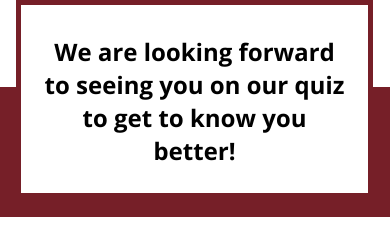

Наша команда

Однажды зимним лондонским вечером мы почувствовали, что пришло то самое время. Явно надо было что-то делать. Проблема была только в том, что кому-то хотелось встретиться с друзьями, кому-то хотелось послушать музыку, а кто-то хотел поиграть во что-то то ли умное, то ли веселое. И как, спрашивается, быть?
Решать вопрос пришлось креативно – сделать так, чтобы было и многолюдно, и музыкально, и интеллектуально, и развлекательно... А как это организовать? Самостоятельно! Так и появился наш that1quiz – коктейль из того, что мы любим, что мы умеем и чему хотели бы научиться. Теперь мы организуем интеллектуально-развлекательные командные игры для русскоговорящих в Лондоне.
Что же скрывается под этими общими словами? Подготовка вопросов, разработка презентации, работа с социальными сетями, общение с пабами и много другое ... С недавних пор у нас даже небольшая типография образовалась! В общем, прилагаем все силы, чтобы сделать каждую новую игру ещё более яркой, запоминающейся и интересной. Мы хотим, чтобы наш квиз стал тем самым квизом, в который бы очень хотелось играть постоянно, ведь это that1quiz!.

Евгения Jenny Соколова
Функционал в команде:
Администратор, проект-менеджер, фотограф, СММ, контент-менеджер, автор вопросов.
Бэкграунд:
Имеет опыт организации мероприятий для детей с 14 лет, для взрослых – с 17 лет. Закончила бакалавриат по направлению “Бизнес – менеджмент и IT”, в настоящее время работает project manager в Barclaycard.
Интересы и хобби:
Активный образ жизни на открытом воздухе – кемпинг, хайкинг, треккинг. Футбол, настольный теннис, волейбол, шахматы. Dogs and board games
Любимый раунд:
Очень люблю придумывать “4 пикс – 1 ансер”, наблюдать за реакцией игроков во время появления картинок на слайде, а потом видеть реакцию на правильные ответы.
О that1quiz:
Проделана огромная работа, но результат превосходит все ожидания! Сложилось целое сообщество умных, активных, общительных и просто настоящих людей, весело и совместно проводящих время на и после квиза! Безумно горжусь и командой организаторов, и всеми нашими участниками. Приятно слышать положительные комментарии об организации наших игр, живые обсуждения вопросов и объективную обратную связь.

Мария Mariia Соколова
Функционал в команде:
Разработчик презентаций к играм, DJ, дизайнер, автор вопросов, PR-менеджер, фотограф.
Бэкграунд:
Студентка второго курса в Queen Mary University of London на программе Business Management.
Интересы и хобби:
Музыка и поп-культура, интересные активности и общение с людьми.
Любимый раунд:
Однозначно “Гес Зэ Вайб”! Современный, яркий и чёткий. Это музыкальный/ визуальный раунд, в котором я души ни чаю - мне нравится подготавливать вопросы, смотреть на реакцию наших участников по время презентации и радоваться правильным ответам вместе с ними.
О that1quiz:
That1quiz - это русскоговорящие в Лондоне, которых связывает любознательность и любовь к азарту. Каждый квиз для меня это гарантия хорошего вечера, развлекательной программы и чудесной компании.

Алексей Alex Mazanov
Функционал в команде:
Ведущий, редактор текстов, модератор, автор вопросов и главный знаток, финансист.
Бэкграунд:
В сфере организации и проведения развлекательных мероприятий работает с 14 лет. Работал культорганизатором, распорядителем танцевальных вечеров и ди-джеем. Филолог, культуролог и педагог, учитель русского языка и литературы.
Интересы и хобби:
Увлекается историей, географией, туризмом и футболом.
Любимый раунд:
Разумеется, самый увлекательный этап - это само проведение мероприятия, при этом любимые раунды - это "4 Пикс - 1 Ансер", потому что это один из самых ярких раундов, и "Ласт чанс", потому что его результаты могут перевернуть результаты игры с ног на голову.
О that1quiz:
Это, в первую очередь, возможность интересно провести время в дружной компании. Это нетворкинг и здоровый игровой азарт в одном флаконе.
